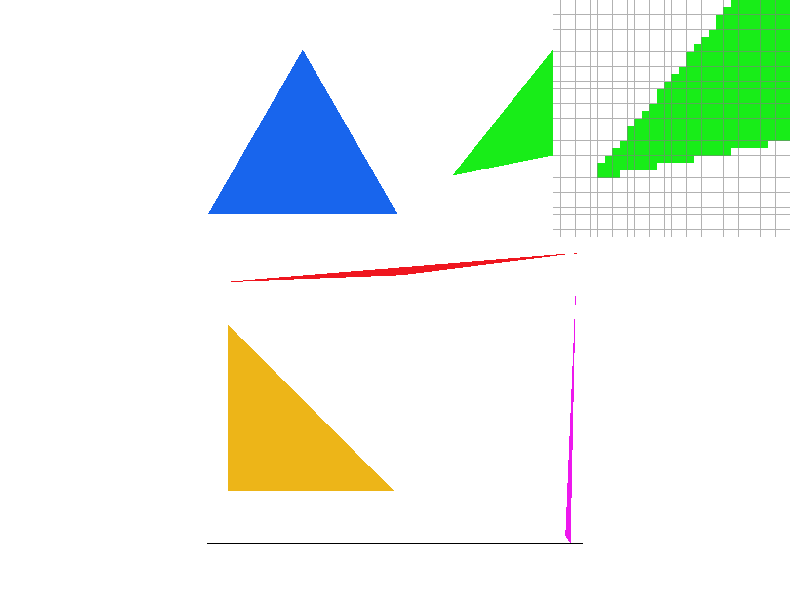

In the project, we focused on the rasterization of triangles, implementing different methods to help antialias our rasterizations. This included supersampling, pixel sampling, and level sampling. Each of these methods yielded different results and could be used in combinations as well. As we worked on the project, we also analyzed the advantages and disadvantages of each method, and their differences. It was really interesting to see these differences and compare the results. Notably, different level sampling methods created vastly different results. It was cool to see how by sampling at different mipmap levels instead of solely at full resolution, the resulting images became so much better! Another cool thing in this project was thinking about how the triangle rasterization and texturing we implemented in this project can scale into the much more complex graphics we see in media!
We rasterize triangles by going through each pixel in the bounding box of the triangle and checking to see if it is in the triangle. We do this by creating three line equations from the three points given to us to make the triangle, and then plugging in the x- and y- of the pixel we’re filling (with a 0.5 correction to get the center of the pixel) to see if the pixel is on the side of the line where the triangle is. If the points given are in a clockwise direction, we check if every line equation evaluated at the pixel value is greater than 0. If the points are given in a counter-clockwise direction, we check to see if the evaluated line equations are less than 0.
Our algorithm is no worse than one that checks within the bounding box of the triangle because we only loop through the pixels in the bounding box of the triangle. We do this in the following way: for the x-coordinates, we start our loop at the minimum of the x-coordinates of the points given, and we end our loop at the maximum; likewise for the y-coordinates.
Functions where sample_buffer is resized are updated for supersampling support by resizing it to width*height*sample_rate. In resolve_to_framebuffer, we previously directly filled the target framebuffer 1:1 with the sample_buffer data. However, for supersampling, the function now instead finds the average of NxN (N is sample_rate) squares of pixels and fills in the corresponding pixel in the target with this average. That is, every pixel (x,y) in the target framebuffer corresponds to an NxN square of pixels in the sample_buffer.
Supersampling is useful because it allows us to antialias our images. We can reduce jaggies and artifacts, as well as create smoother lines and edges.
Modifications in rasterize_triangle were made for supersampling. The given coordinates of the triangle are scaled by sqrt(sample_rate) so that we can fill in the sample buffer of size width*height*sample_rate properly, where we are checking if a sample_rate number of points are in the triangle instead for every point originally (at sample_rate 1). rasterize_point and rasterize_line also needed to be updated such that for every pixel we would be rasterizing at sample_rate 1, we are now filling a NxN square of pixels. We are upsizing the rasterizations for larger sample_rate values, then downsizing to the correct dimensions in resolve_to_framebuffer with the average values.
Supersampling antialias the triangles by removing higher frequencies. This occurs because we are first filling a larger-dimension image, then approximating the pixels of the original dimensions by using averaged values. This allows us to “blur” the areas of the image where there may have been jaggies, and smooth out our edges and lines.
When we have higher sample rates, there are less jaggies and the edges are smoother. This is because we filled in our sample buffer at a higher resolution for higher sample rates and downsampled the sample buffer to fill in the target, causing some pixels to have averaged colors instead. This helps antialias the image by blurring the edges and removing high frequencies when we are downsampling.
Barycentric coordinates give a position of a point relative to the three points of a triangle. These coordinates can be used to smoothly color a triangle, as shown in the above photo. The colors are smoothly interpolated between the points by taking essentially a weighted average of the colors in the points, using barycentric coordinates to find the weights.
Pixel sampling can be used to implement texture mapping by sampling pixels from an image we want the texture of and creating our new image with the colors from the texture that we obtain through sampling. In nearest sampling, we obtain the color we want to fill the sample buffer by extracting it from the mipmap at the coordinates corresponding to our input (u, v) coordinates. We can do this by scaling (u, v) by the width and height of the mipmap, respectively. Alternatively, bilinear sampling finds the corresponding coordinates but samples using the four nearest sample locations instead. We apply linear interpolation using the four points (two horizontal lerps and one vertical lerp) in order to obtain our final color.
Nearest Sampling, Sample Rate 1
Bilinear Sampling, Sample Rate 1
Nearest Sampling, Sample Rate 16
Bilinear Sampling, Sample Rate 16
At both sample rate 1 and 16, the difference between the two methods is most obvious as nearest sampling has a lot more jaggies and the edges are not smooth. In contrast, bilinear sampling had much smoother edges. Bilinear sampling at sample rate 16 has the smoothest edge and no noticeable jaggies at the inspected location. There are large differences between the two methods when our image is supposed to generate more curved edges and/or has a lot of details.
In level sampling, we are taking samples from different levels of the mipmap of the texture. At each level the texture image is downsampled. We want to pick the texture that has the most similar resolution as the screen sampling rate for each sample. The implementation for level sampling involves three different methods. When we have L_ZERO, we always assume a level of 0, which means the texture image is at full resolution. This is what we used by default in Task 5. When we have L_NEAREST, we have to find the nearest level and use that value in our sample_nearest and sample_bilinear functions which both take in a mipmap level value as the parameter. The level is found based on calculations from the lecture slides, and we clamp the value to ensure we have a valid level between 0 and mipmap.size() - 1, then finally rounding to the nearest level. For L_LINEAR we compute a continuous mipmap level value. After we calculate the level as before, we do not round to the nearest neighbor and use this float value to find the adjacent two levels. We then calculated a weighted sum of the two samples found at each adjacent level. The weight is found by finding the difference between each adjacent level and the calculated float level value.
Supersampling, while produces high quality restuls, is the most costly in terms of speed and memory. Level sampling also good results and is more time efficient than supersampling but takes up a lot of memory. Pixel sampling, while may not produce results that are as good as the other two methods, is more cost-efficient.
L_ZERO and P_NEAREST
L_ZERO and P_LINEAR
L_NEAREST and P_NEAREST

L_NEAREST and P_LINEAR